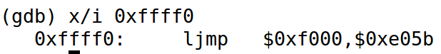
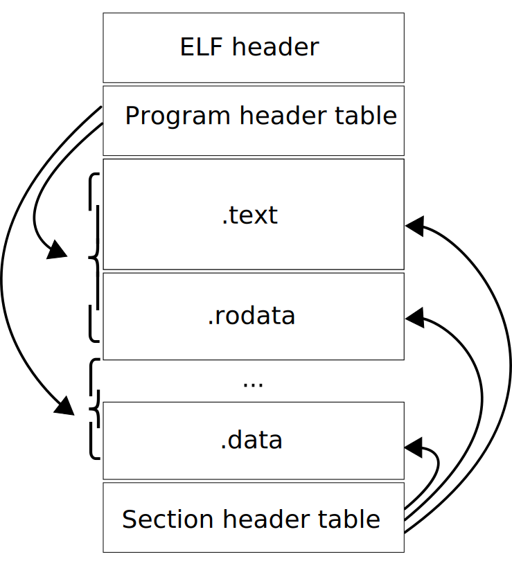
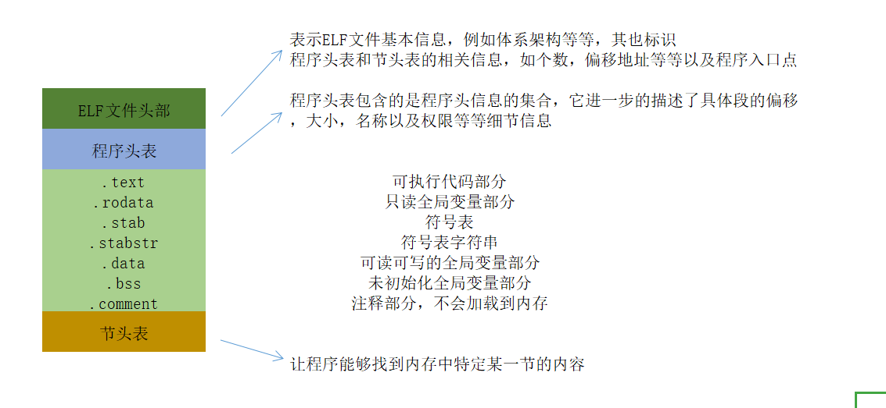
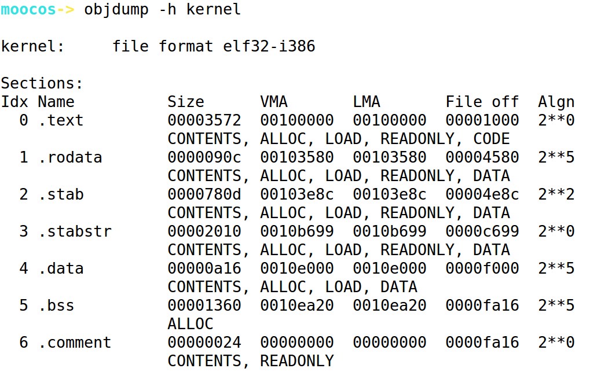

ucore Lab1
操作系统实验报告
实验1: bootloader的启动
练习1
要求：
- 操作系统镜像文件ucore.img是如何一步一步生成的？(需要比较详细地解释Makefile中每一条相关命令和命令参数的含义，以及说明命令导致的结果)
- 一个被认为是符合规范的硬盘主引导扇区的特征是什么？
实验过程: 在构建过程中使用
make V=来查看具体执行过程，具体执行过程如下1
2
3
4
5
6
7
8
9
10
11
12
13
14
15
16
17
18
19
20
21
22
23
24
25
26
27
28
29
30# 以下均为将各个文件编译为目标文件
+ cc kern/init/init.c //编译 init.c
+ kern/libs/readline.c //编译 readline.c
+ cc kern/libs/stdio.c //编译 stdio.c
+ cc kern/debug/kdebug.c//编译 kdebug.c
+ cc kern/debug/kmonitor.c //编译 kmonitor
+ cc kern/debug/panic.c//编译 panic.c
+ cc kern/driver/clock.c //编译 clock.c
+ cc kern/driver/console.c //编译 console.c
+ cc kern/driver/intr.c//编译 intr.c
+ cc kern/driver/picirq.c //编译 picirq.c
+ cc kern/trap/trap.c //编译 trap.c
+ cc kern/trap/trapentry.S //编译 trapentry.S
+ cc kern/trap/vectors.S //编译 vector.S
+ cc kern/mm/pmm.c//编译 pmm.c
+ cc libs/printfmt.c // printgmt.c
+ cc libs/string.c //编译 string.c
+ ld bin/kernel//接下来用ld合并目标文件(object) 和 库文件(archive),生成kernel程序
+ cc boot/bootasm.S //编译 bootasm.S
+ cc boot/bootmain.c //编译 bootmain.c
+ cc tools/sign.c //编译 sign.c
# 以上执行过程均附加了gcc参数如下,以第一行init.c为例
gcc -Ikern/init/ -fno-builtin -Wall -ggdb -m32 -gstabs -nostdinc -fno-stack-protector -Ilibs/ -Ikern/debug/ -Ikern/driver/ -Ikern/trap/ -Ikern/mm/ -c kern/init/init.c -o obj/kern/init/init.o
# gcc -I 指明包含路径名称 -fno-builtin表明不使用内建函数 -Wall开启所有警告 -ggdb生成GDB调试信息 -gstabs此选项以stabs格式声称调试信息,但是不包括gdb调试信息，-m32生成32位机器的汇编代码 -nostdincgcc编译的时候不要在标准系统目录中找头文件 -fnostack-protector 不启用溢出检测机制
+ ld bin/bootblock //链接生成block文件
//最后将bootloader放入虚拟硬盘ucore.img中去。
dd if=/dev/zero of=bin/ucore.img count=10000
dd if=bin/bootblock of=bin/ucore.img conv=notrunc
dd if=bin/kernel of=bin/ucore.img seek=1 conv=notrunc
# 这里用到了dd命令，if是输入of是输出count是块大小，关于conv参数可以参考 https://www.cnblogs.com/dkblog/archive/2009/09/18/1980715.html https://blog.csdn.net/u011616400/article/details/41575745 ,其作用睡觉哦不截断输出文件一个被系统认为是符合规范的硬盘主引导扇区的特征是什么？
查看tools/sign.c文件如下1
2
3
4
5
6
7
8
9
10
11
12
13
14
15
16
17
18
19
20
21
22
23
24
25
26
27
28
29
30
31
32
33
34
35
36
37
38
39
40
41
42
43
44
45
46
47
48
49
50
51
int main(int argc, char *argv[]) {
struct stat st;
//检查输入参数
if (argc != 3) {
fprintf(stderr, "Usage: <input filename> <output filename>\n");
return -1;
}
//stat函数传入文件名和结构体对象可以返回一个结构体信息，检测是否是吧
if (stat(argv[1], &st) != 0) {
fprintf(stderr, "Error opening file '%s': %s\n", argv[1], strerror(errno));
return -1;
}
//输出长度
printf("'%s' size: %lld bytes\n", argv[1], (long long)st.st_size);
//检测是否超过510个字节
if (st.st_size > 510) {
fprintf(stderr, "%lld >> 510!!\n", (long long)st.st_size);
return -1;
}
//建立缓冲区，将缓冲区置0
char buf[512];
memset(buf, 0, sizeof(buf));
//读取文件，填充缓冲区
FILE *ifp = fopen(argv[1], "rb");
int size = fread(buf, 1, st.st_size, ifp);
//判断文件大小是否如文件信息所述
if (size != st.st_size) {
fprintf(stderr, "read '%s' error, size is %d.\n", argv[1], size);
return -1;
}
//关闭流
fclose(ifp);
//写入标识
buf[510] = 0x55;
buf[511] = 0xAA;
//打开新文件，写出
FILE *ofp = fopen(argv[2], "wb+");
size = fwrite(buf, 1, 512, ofp);
//再次检测大小是否符合要求
if (size != 512) {
fprintf(stderr, "write '%s' error, size is %d.\n", argv[2], size);
return -1;
}
fclose(ofp);
printf("build 512 bytes boot sector: '%s' success!\n", argv[2]);
return 0;
}
练习2
要求：
使用qemu执行并调试lab1中的软件。（要求在报告中简要写出练习过程）
准备工作
1 | V=@ |
第一行参数表
- -S 在启动时不启动 CPU， 需要在 monitor 中输入 ‘c’，才能让qemu继续模拟工作
- -s 等待gdb连接到端口1234
- -d 输出日志到 qemu
- -hda 指明使用file作为硬盘0镜像
- -serial dev 重定向虚拟串口到主机设备dev中
第三行参数表
- -x 指明预设命令文件,预设文件如下
1
2
3
4
5
6file bin/kernel #加载符号信息
target remote :1234 #与qemu进行链接
set architecture i8086 #设置处理器架构
b *0x7c00 #在0x7c00设置断点
continue #继续
x /2i $pc #显示PC之后的两条指令
使用GDB命令完成以下工作:
- 查看PC之后的10行命令
x/10i $pc - 查看具体位置的内存数据
x/ - 查看GDTR寄存器的值
- 断点
b *0x7c0a - 打印所有寄存器
info register，也可以是i r - 在开启保护模式后设置架构
set architecture i386 - 单步源代码的下一行，不进入函数
next - 单步一条机器指令，不进入函数
nexti - 单步到下一个不同的源代码行,进入函数
step - 单步到一条机器指令，进入函数
stepi从CPU加电执行的第一条指令开始，单步跟踪BIOS的执行
由于开机时处于实模式，开机的时候CS:IP=0xf000:fff0因此应该查看这里的指令

之后执行一系列BIOS操作最够将控制权转交给0x7c00的bootloader部分
练习3 分析bootloader进入保护模式的过程
步骤(关键步骤前加*)
- 准备基本的GDT表项以供使用进入保护模式之后使用
- 初始化寄存器
- *检测并发送A20开启信号来开启A20
- *通过修改CR0寄存器的保护模式使能位进入保护模式
- *用保护模式的寻址机制跳转到初始化保护寄存器的代码段(protcseg)长跳转指令进入
- *初始化堆栈部分一便于C语言程序的调用堆栈区域是从0–start(0x7c00)
代码阅读
代码注释练习4：分析bootloader加载ELF格式的OS的过程。
bootloader在前面可以看到，分为两部分，一部分是汇编代码写的，主要完成进入保护模式并初始化寄存器，第二部分是C代码写的，主要完成加载ELF格式的内核文件到内存中，这里就涉及到原生的C并不能完成的任务，例如读取硬盘扇区，在这里使用的是GCC内联汇编来完成基本功能被C代码使用的。读取硬盘部分
读取扇区(readsect)的操作可以分为如下几部分 - 等待磁盘准备好 (
whitdisk(void)) - 发出读取磁盘的命令 (向硬盘的IO端口输出读取信息)
- 等待磁盘准备好 (
whitdisk(void)) - 将磁盘扇区的数据读到指定的内存中去
0号磁盘的IO端口详细信息:
1F0H 0号硬盘数据寄存器
1F1H 0号硬盘错误寄存器(读时),0号硬盘Features寄存器(写时)
1F2H 0号硬盘数据扇区计数
1F3H 0号硬盘扇区数
1F4H 0号硬盘柱面(低字节)
1F5H 0号硬盘柱面(高字节)
1F6H 0号磁盘驱动器/磁头寄存器
1F7H 0号硬盘状态寄存器(读时)，0号硬盘命令寄存器(写时)
装载ELF格式内核

在这里需要简单的了解ELF文件布局如下

使用objdump -h查看ELF文件信息，可以查看在相关节的信息

- 链接地址(Virtual Memory Address)和加载地址(Load Memory Address):程序在链接的时候会确定链接地址，这个地址是逻辑上的，代码中绝对的跳转都按照此基准进行，而加载地址是事实加载的地址。
1
2
3
4
5
6
7
8
9
10
11
12
13
14
15
16
17
18
19
20
21
22
23
24
25
26
27
28
29
30
31
32
33
34
35
36/* bootmain - bootloader的入口 */
void
bootmain(void) {
// 将文件的前4KB读取内存
readseg((uintptr_t)ELFHDR, SECTSIZE * 8, 0);
// 检测加载进内存的内核模块是否是ELF文件
if (ELFHDR->e_magic != ELF_MAGIC) {
goto bad;
}
struct proghdr *ph, *eph;
// 通过结构体的偏移找到程序头表的入口，并加载程序段(ignores ph flags)
ph = (struct proghdr *)((uintptr_t)ELFHDR + ELFHDR->e_phoff);
// 通过指针的偏移,找到程序头表结束的地址
eph = ph + ELFHDR->e_phnum;
//开始对程序头表包含的具体的信息进行遍历处理
for (; ph < eph; ph ++) {
//用readreg这个函数将文件的每一个段都读到内存中由程序头表的相应位置
//由于kernel 程序的链接地址太高，而实际内存没有那么大的情况下，实际地址就是&0xFFFFFF的结果(Mark，这个还不是太懂)
readseg(ph->p_va & 0xFFFFFF, ph->p_memsz, ph->p_offset);
}
// 调用elf文件格式指明的程序入口点地址，转交控制权
// note: 不会返回
((void (*)(void))(ELFHDR->e_entry & 0xFFFFFF))();
/*加载失败跳转到这里*/
bad:
outw(0x8A00, 0x8A00);
outw(0x8A00, 0x8E00);
/* 无限循环 */
while (1);
}
实现函数调用堆栈跟踪函数 （需要编程）
一个函数调用的大致步骤分为以下阶段，由于调用约定多样，这里只总结大致步骤
- 参数的传入，可以push参数，也可以传入具体的寄存器
call将返回地址压入堆栈中，ESP-4(32位)，此时ESP指向的是保存返回值的地址push %ebp将上一个堆栈的栈底指针传入，ESP再次-4mov %esp,%ebp设置新的栈底- 提升栈空间，用于函数操作
- 保护现场，具体是保存将要修改的寄存器
- 其他初始化工作
- 执行函数核心内容
- 恢复现场
pop %ebp恢复堆栈ret
依据上述过程易得：
- 如果函数传入参数是通过在call之前压入参数来做到了，那么其参数地址是ebp+8+4*(n+1),n=1,2,3…
- 函数的返回地址是ebp+4
- ebp指示的位置是上一个函数调用esp的位置，ebp内保存的内容是原来ebp的值